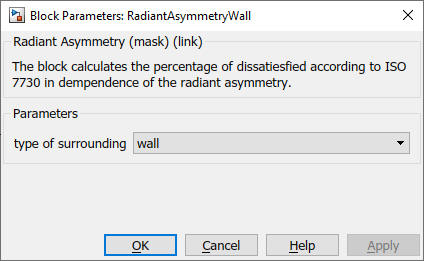

RadiantAsymmetryWall
Path: CARNOT/Outputs/Comfort
Purpose:
This block calculates the percentage of dissatisfied due to radiant temperature
asymmetry according to ISO 7730.
Description:
The percentage of dissatisfied depents on the geometric situation (wall or
ceiling) and the case (surface colder or warmer than the surrounding). The
block calculated the percentage of dissatisfied due to a cold / warm wall or
a cold / warm ceiling. See ISO 7730 for details.
Input:
| DeltaTpr | : | temperature difference of the surface (wall / ceiling) to the surrounding radiation temperature in K |
Output:
| PD | : | percentage of dissatisfied in % |
Parameters and Dialog Box:

Examples:
Open the example explorer from the Matlab command window
ExampleBrowser
or load the examples via the CARNOT library.
Literature:
ISO 7730 : Ergonomics of the thermal environment – Analytical determination
and interpretation of thermal comfort using calculation of the PMV and PPD
indices and local thermal comfort criteria (ISO 7730:2005)
NOTE:
Only the detailed room model of Carnot is able to deliver the necessary
data for this block.
Characteristics:
| Direct Feedthrough | : | Yes |
| Sample Time | : | Inherited from driving block |
| Vectorized | : | No |